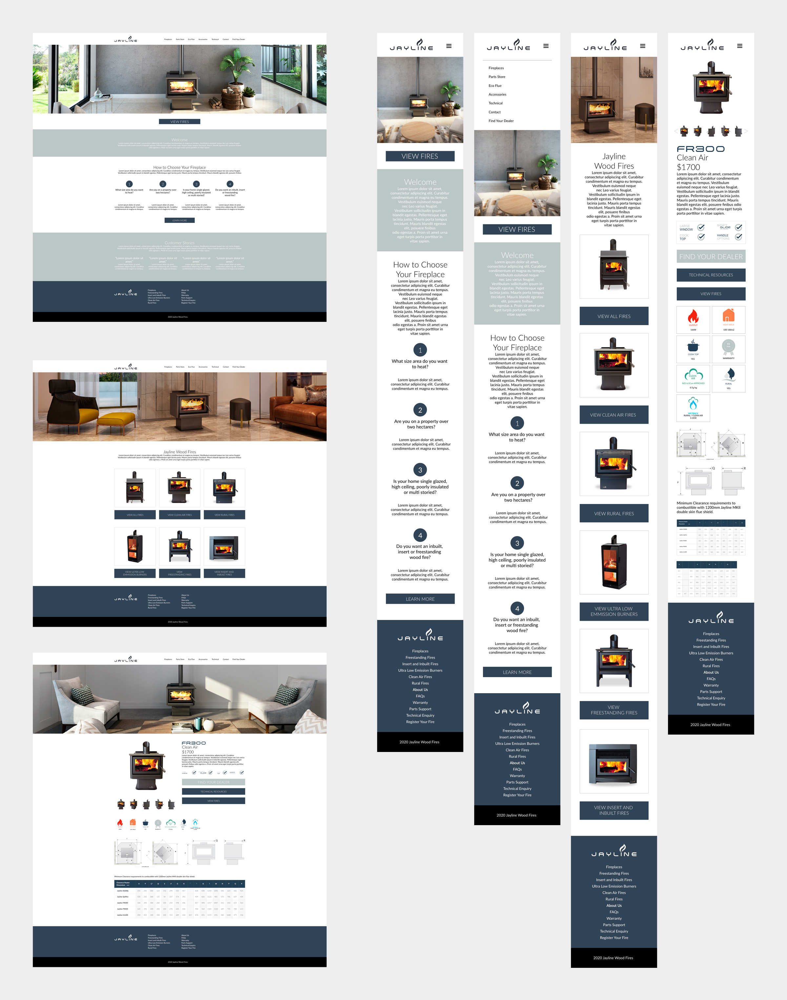
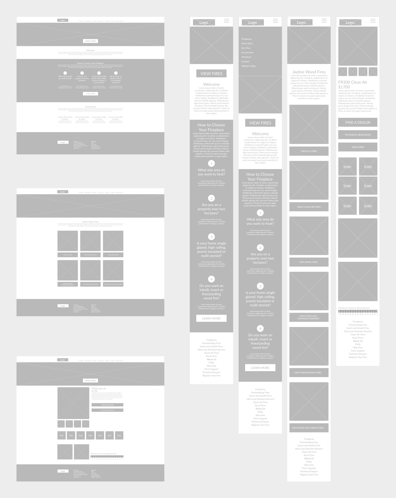

Nicholas Wolfaardt
Jayline Website Redesign 2020
Redesigned the Jayline website using principles of user experience design. Used custom HTML and CSS to build pages within Wordpress using Visual Composer. Used Adobe Photoshop, Adobe Illustrator and Adobe XD to create design elements. All product photography for this website was done by me. jayline.co.nz
Hi-res mockups for desktop and mobile layouts using Adobe XD.
Wireframe mockups for desktop and mobile layouts using Adobe XD.